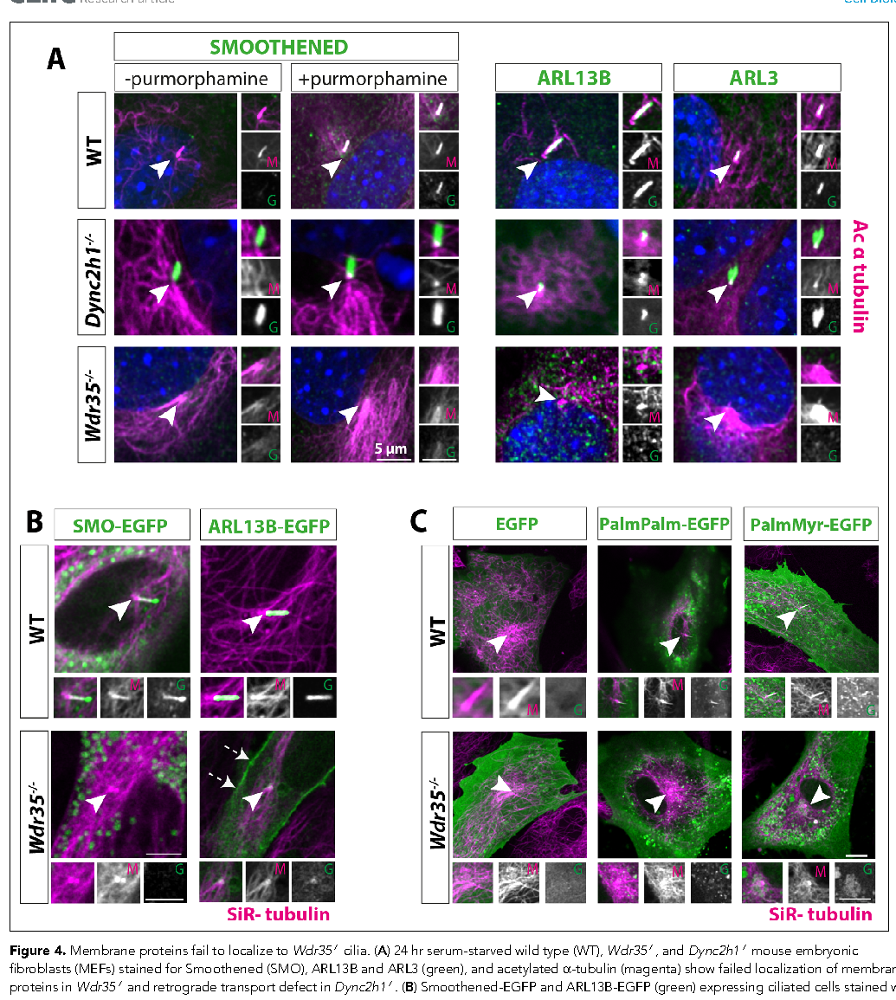
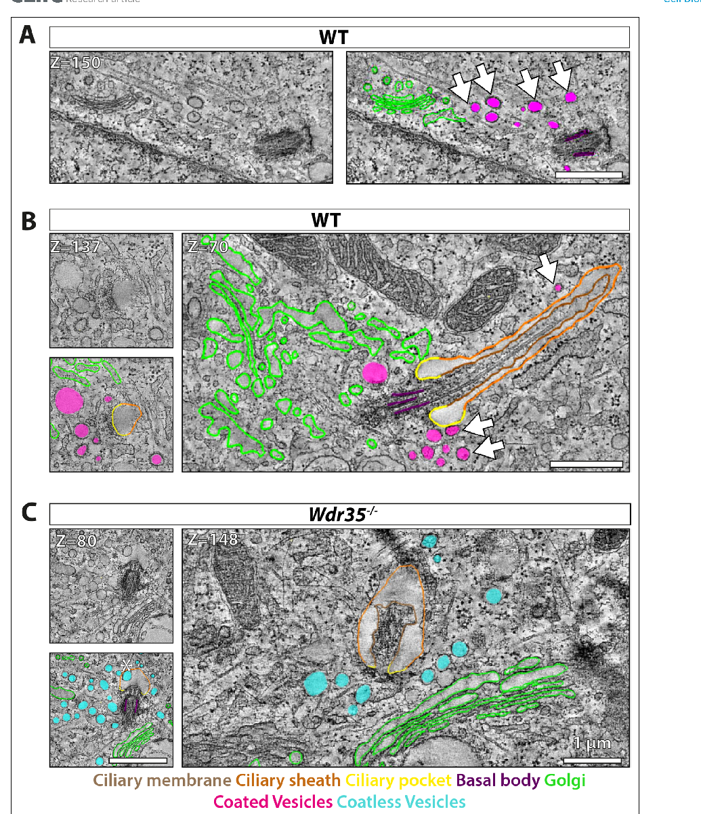
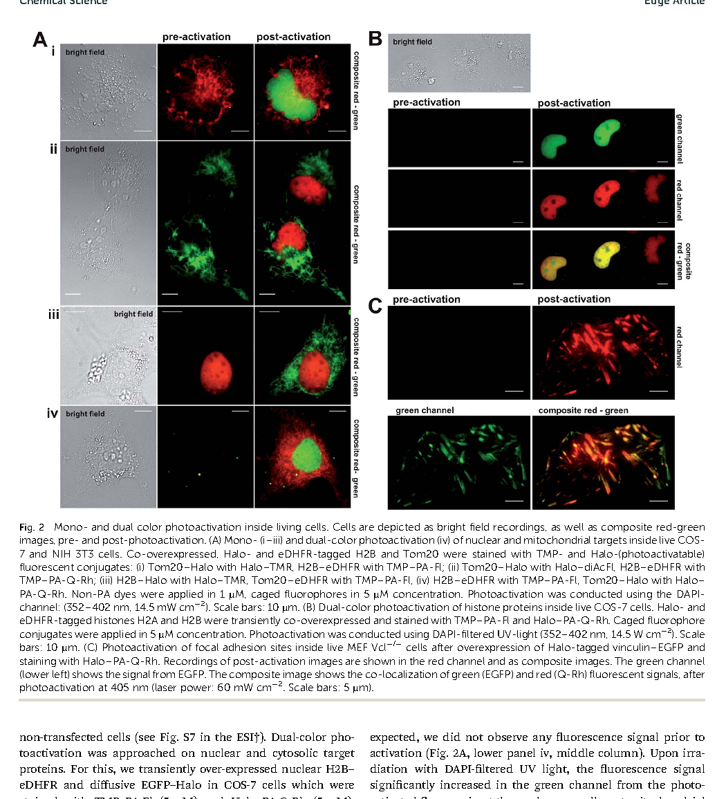
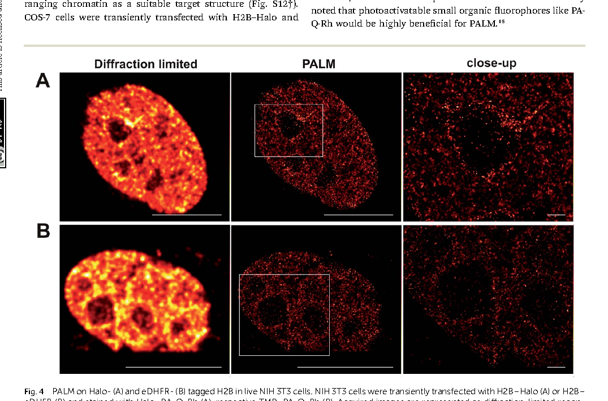

Trafficking to and within the cilium
Including the WDR35/IFT121 trafficking story, linking ciliary transport to a coatomer-like cellular transport mechanism.
I have more than a decade of research experience across India, Germany, the United Kingdom, and the United States. My work combines cilia biology, vesicular trafficking, proteomics, genomics, super-resolution microscopy, CLEM, and 3D-TEM to understand how cellular organization shapes disease-relevant phenotypes.
I study how ciliary structure and trafficking shape cell function and disease-related phenotypes.
During my PhD at the University of Edinburgh, I identified a coatomer-like role for WDR35/IFT121 in ciliary membrane cargo transport, using 3D-TEM, correlative microscopy, mouse genetics, and proteomics to examine how membrane cargo reaches the cilium.
My postdoctoral work at UMass Chan Medical School expanded that framework into kidney cystogenesis, ADAMTS9-mediated TMEM67 biology, central apparatus function, and Chlamydomonas model systems, while earlier work at EMBL Heidelberg and the Max Planck Institute built my foundation in super-resolution imaging, signaling, and quantitative cell biology.
My work brings together cilia biology, imaging, and disease-oriented cell biology.
Including the WDR35/IFT121 trafficking story, linking ciliary transport to a coatomer-like cellular transport mechanism.
I use imaging methods to connect ultrastructure, protein localization, and cell biological mechanism.
My disease-focused work includes kidney cystogenesis, TMEM67 biology, and related cilia-linked phenotypes.
Academic appointments across cilia biology, imaging, signaling, and cell biology.
Peer-reviewed work in cilia biology, imaging, and disease mechanism, with figures from two papers shown below.

A core result figure showing failed ciliary localization in the Wdr35 mutant context.

Electron microscopy highlighting coated and coatless vesicles near the cilium.

A main figure showing mono- and dual-color photoactivation workflows in live-cell imaging.

A tighter crop focused on the central PALM result rather than the full page scan.
Peer-reviewed articles
Preprints and other scholarly outputs
Selected presentations, fellowship support, and teaching-related contributions.
Experimental and analytical methods used across cilia biology, imaging, and cell biology.
Microscopy workflows used as primary tools for biological discovery.
STORM, PALM, STED, SIM, CLEM, 3D-TEM, Airyscan, Hyvolution, deconvolution, FRAP, FRET, FLIM.
ImageJ, Imaris, Huygens, IMOD, tomography, segmentation, and image processing pipelines.
Experimental range from cloning and culture systems to proteomics and genome editing.
CRISPR, cloning, PCR and RT-PCR, immunoprecipitation, mass spectrometry, western blotting, ELISA, mutagenesis, protein purification.
MEF, human fibroblasts, IMCD3, MDCK, HepG2, RP2, platelets, stem-cell related systems, Chlamydomonas culture, mouse kidney, and Plasmodium falciparum culture.
Structural and quantitative support for image-heavy and proteomics-heavy biology.
AlphaFold, Swiss Model, Phyre2, HHblits, PyMOL, Coot, MATLAB, basic Python, BioRender, and scientific visualization tools.
Adobe Photoshop, Illustrator, InDesign, Office tools, and science communication coursework.
Academic training and current proposal-stage collaborations.